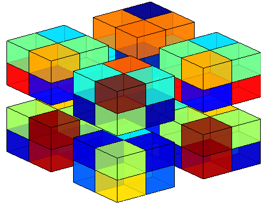
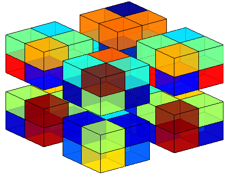
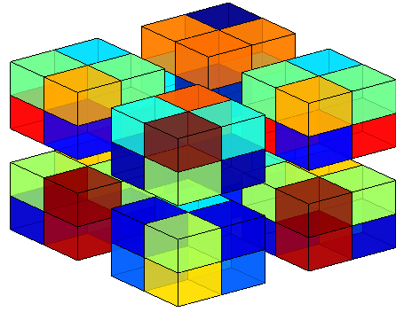
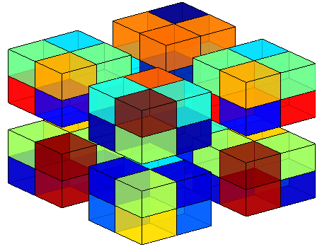

Software Packages
- tevis (tensor visualization) is a MATLAB package for the visualization of tensors, which facilitates understanding of tensor-structured data and generates illustrative figures for tensor data methods. [GitHub]
 


 
